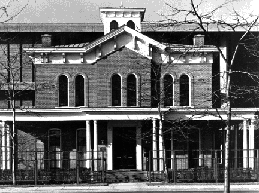

Driving Question
How would American society be different if the individual did not succeed and failure was the only option?
If Jane Addams didn’t succeed,society would be different because Jane is an advocate for the poor. She had built the Hull house which is settlement house.According to About Education said that Jane was” vice-president for the National American Woman Suffrage Association.Jane was trying to get the privilege of voting for all women.And I think that if Jane wasn’t succeed we women wouldn’t be able to vote in today society.We probably would be the same as when the women were before the 1920. Also if Jane didn’t help the poor she wouldn’t have the Hull House . And she wouldn’t have had a big impact on the nation if it wasn’t for her hard work and dedication.
